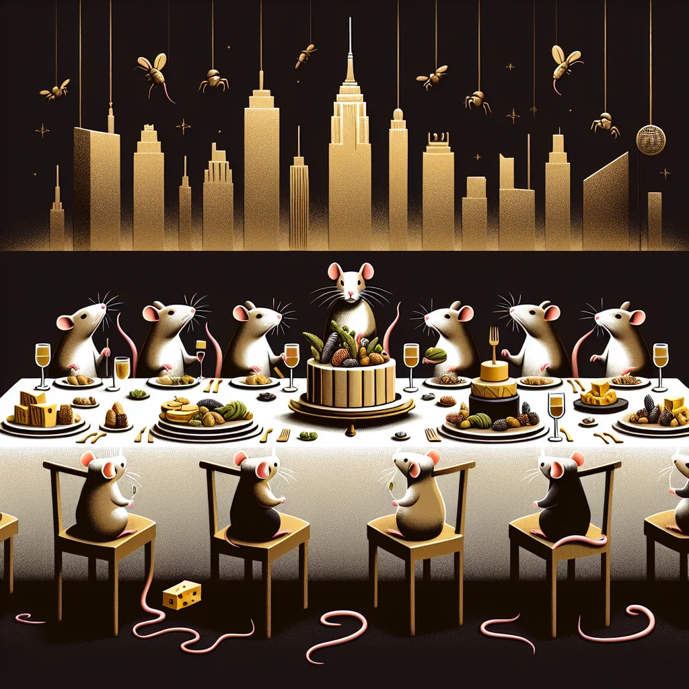

{kind=link}
{kind=link}
In the heart of Ratopolis, a culinary revolution is underway. No longer satisfied with mere garbage and leftovers, our city's top chefs are transforming rat cuisine into a sophisticated and diverse gourmet experience. How did humble scraps turn into haute cuisine? Let's explore the upscale rat restaurants that are redefining fine dining.
Ratopolis has long been synonymous with survivalist dining. For generations, scavenging was the norm, and a feast meant the fresh find of the day. But over the past year, a wave of high-end restaurants has emerged, challenging our traditional diet. With a focus on innovation, these establishments are turning heads and delighting palates.
Meet Chef Whiskerino, a trailblazer in rat cuisine known for his inventive use of insect ingredients. "Insects are the future," he declares confidently. His signature dish, Insect Tapas, features crispy crickets and spicy grasshopper skewers, beautifully plated and bursting with flavor. "It's all about rethinking what's already out there," he adds.
On the other side of the culinary spectrum, Chef Brie champions vegan recipes that have even the staunchest meat-eaters reconsidering their choices. "Rats have always been resourceful," she notes. "Why not channel that creativity into plant-based dishes?" Her Vegan Nut Cheese Platter is a hit, offering a savory selection that rivals traditional dairy.
An exciting aspect of this gourmet revolution is the diversity in cuisine. The elite dining scene is not just about fancy ingredients; it's about elevating everyday meals. Squeaky, a local resident, shares her enthusiasm: "The vegan options are a game-changer. It's amazing to see how creative our chefs have become."
Of course, not everyone is on board with this new wave of dining. "I appreciate the innovation, but I do miss the simplicity of our old diet," says Nibbles, a long-time resident. "Not every rat can afford these fancy meals."
His concerns are valid. Gourmet dining often comes with a hefty price tag, making it accessible only to a privileged few. The challenges of balancing tradition with innovation remain, but efforts are being made to bridge that gap. Economic opportunities are growing, with more jobs and the rise of young chefs eager to make their mark. However, accessibility remains a hot topic.
Despite the criticisms, the impact of the gourmet scene on Ratopolis' economy cannot be ignored. Upscale restaurants are creating jobs and drawing tourists from far and wide. "Eating out has become an event," comments Remy, a local food critic. "I never thought I'd see the day when rats would dine on anything other than scraps. It's truly a whisker-licking experience!"
The cultural shift is also significant. Global culinary trends are influencing our local cuisine, making Ratopolis a melting pot of flavors and ideas. Community initiatives are popping up to make gourmet dining more inclusive, offering meal-sharing programs and culinary workshops.
As we look towards the future, it's clear that Ratopolis' culinary scene is on the brink of something extraordinary. Emerging chefs are ready to take the baton, pushing the boundaries of what rat cuisine can be. Predictions for the next big thing in our kitchens range from sustainable foraging practices to tech-driven cooking methods.
In conclusion, the transformation of Ratopolis' dining landscape is a testament to our city's resilient spirit and boundless creativity. The gourmet revolution offers a promising blend of tradition and innovation, paving the way for a new era of fine dining. While challenges persist, the journey from garbage to gourmet is one worth taking.
So, fellow rats, what's your take? Have you tried any of these upscale dining experiences? We want to hear from you! Share your thoughts and let’s keep this delicious conversation going as we navigate the exciting culinary horizons ahead. Whether you're a food enthusiast or a curious onlooker, Ratopolis' dining scene has something for everyone. Whisker Walters, signing off.
Looking for more in-depth news and exclusive content? Follow RAT TV for real-time updates, behind-the-scenes insights and the latest breaking news.
Ratropolis' Elite Culinary Scene: Beyond Garbage and Leftovers
In Ratopolis, a culinary revolution is transforming rat cuisine from scavenged scraps to sophisticated gourmet experiences, led by innovative chefs and diverse dining options.
3 minute read •
Comments

Comments